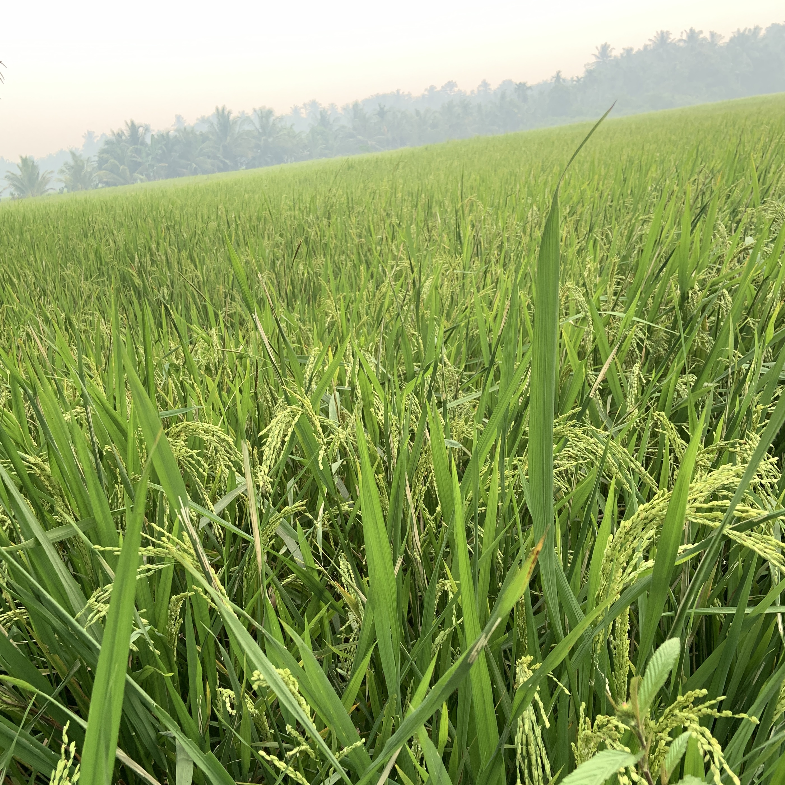
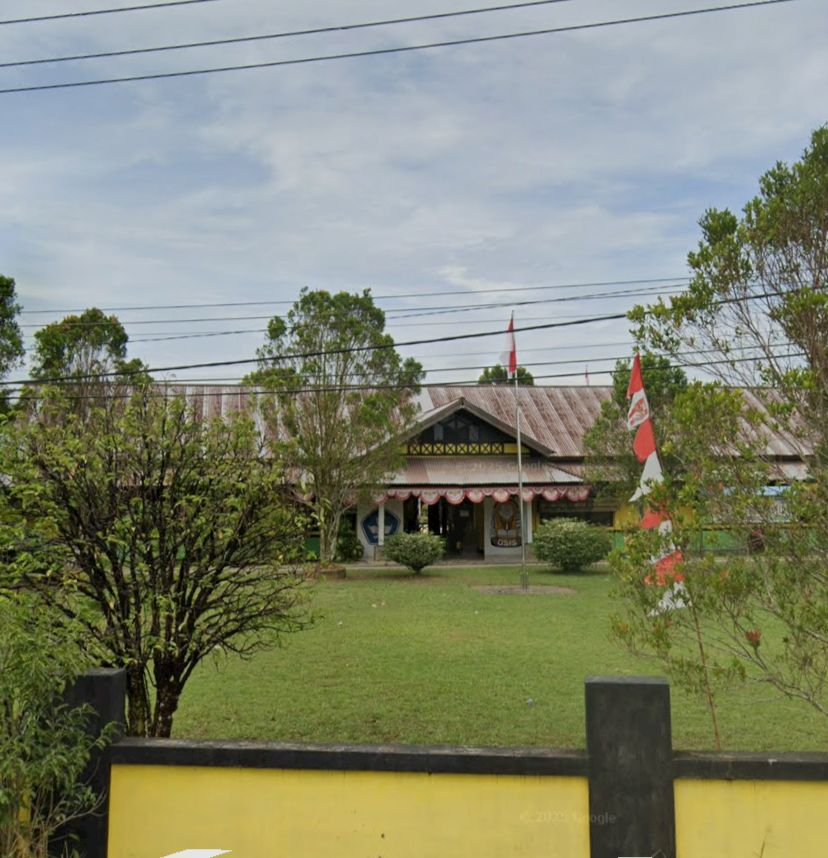
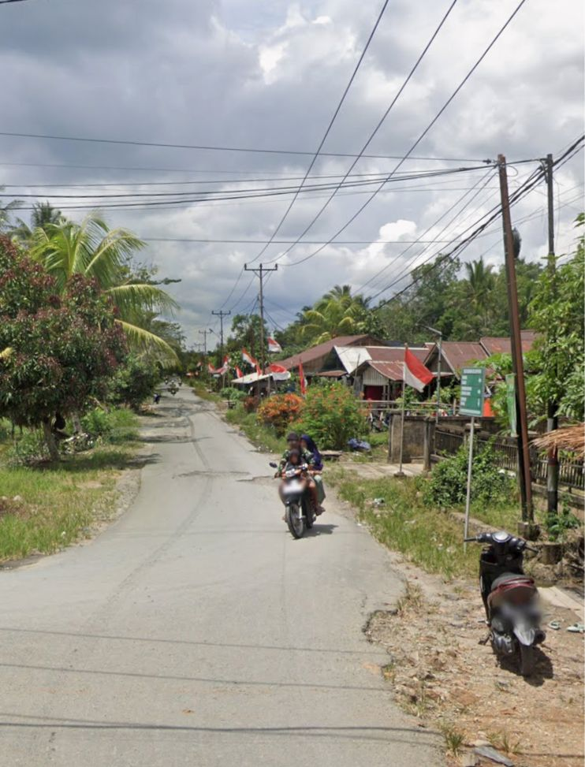
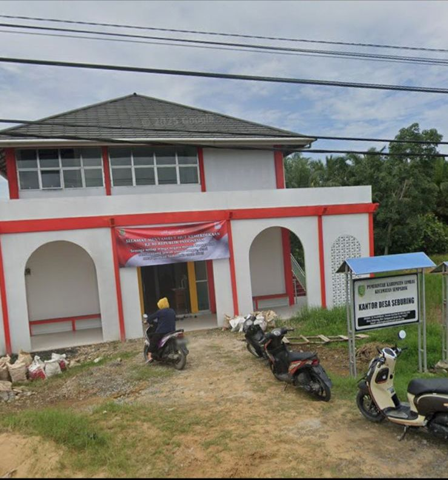

DOKUMENTASI
Galeri Desa Seburing
Foto dapat kamu ambil dari galeri resmi Desa Seburing dan disimpan ke folder website.




SELAMAT DATANG DI
Kecamatan Semparuk, Kabupaten Sambas, Provinsi Kalimantan Barat.
Jelajahi DesaTENTANG DESA

Desa Seburing merupakan salah satu desa yang berada di Kecamatan Semparuk, Kabupaten Sambas, Provinsi Kalimantan Barat.
Desa Seburing memiliki luas wilayah sekitar 1.266 hektare dan terdiri dari tiga dusun, yaitu Dusun Kartini, Dusun Mulia, dan Dusun Makmur.
KEUNGGULAN DESA
Pertanian menjadi salah satu bagian penting dalam kehidupan masyarakat Desa Seburing.
Lingkungan pedesaan yang asri menjadi salah satu kekayaan Desa Seburing.
Semangat gotong royong menjadi bagian penting dalam kehidupan masyarakat.
Masyarakat aktif dalam berbagai kegiatan sosial dan pembangunan desa.
WILAYAH DESA
DOKUMENTASI
Foto dapat kamu ambil dari galeri resmi Desa Seburing dan disimpan ke folder website.



INFORMASI
Jln. Pendidikan Seburing, Desa Seburing, Kecamatan Semparuk, Kabupaten Sambas, Kalimantan Barat, 79453
seburingkantordesa@gmail.com
Kecamatan Semparuk
LOKASI
Kecamatan Semparuk, Kabupaten Sambas, Kalimantan Barat